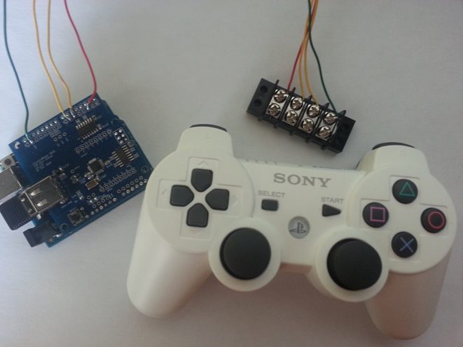

Computer and Electrical Overview
The computer and electrical engineers on the team were tasked with designing a safe and stable electrical system and an easy to user interface to control the robots. They have revamped the old schematics and implemented an entirely new embedded system for the project.
Arduino Solution

The computer engineering major has implemented an entirely new embedded system using the Arduino Uno microcontroller and the Playstation 3 Bluetooth controller as the core components. This new Arduino based system is able to interface with motors, servos, and anything else needed to provide necessary function to the players and is more cost effective, easier to code, quicker to implement, is more stable, and provides a much more user friendly interface to drive.
The entire system contains four major components:
- Arduino Uno costing approximately $25.
- Arduino USB Host Shield costing $30.
- Long-range Bluetooth USB Key costing $15.
- Playstation 3 Wireless Controller costing approximately $45.
In total the system costs a little over $100 per robot for the major electrical components. In the past years the system was upwards of $250.
The code is written and Unos programmed using the Arduino Development Environment which is free for use and available directly from the Arduino website.
Alongside the new system the "tackle sensor" provided to all teams were used again. The tackle sensor is mounted on the base of every robot and outputs a signal to the Arduino when the latteral g-force exceeds a programmed threshold.
This system interfaces with multiple motors and servos to complete all the necessary functions a football team needs. It can throw a ball, kick a ball, catch a ball, and run it down the field to the end zone.
Electrical Implementation
The electrical engineering majors have created a reliable and safe way to power all of the
electronics in every robot. This system safely handles all of the electronic components in the
Arduino solution as well as numerous motors and servos needed to keep the team functioning.
Players with specific functionality other than moving have more complex wiring arrangements; the basic layout remains constant in all the robots. As shown in the schematic, the Arduino has one input and two outputs for the lineman. The yellow wires at pins 5 and 6 send the signal to the motor control to create motion. The red wire input comes from the tackle sensor, in order to freeze all action for four seconds after a player is tackled. The kill switch enables power to the motors only when enabled. In some robots, there is an extra level of safety included in a relay. With the kill switch, the addition of a relay was determined to be redundant for this application. By removing this component from most of the robots, safety was unaffected and the wiring became even less complex.